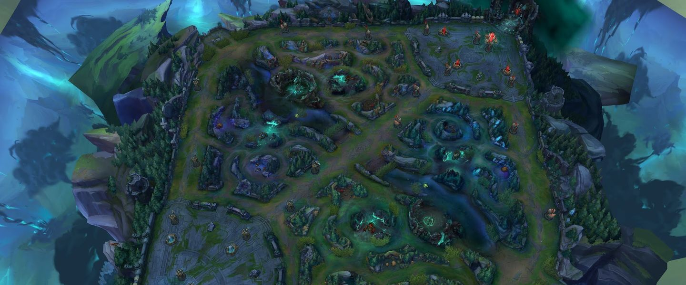

Bienvenidos a la guía de League of Legends
Explora campeones, mapas y roles del popular juego de Riot Games.
Personajes

League of Legends cuenta con más de 160 Personajes, cada uno con habilidades únicas y estilos de juego. ¡Descubre cuál se adapta a ti!
Mapas

Juega en mapas como la Grieta del Invocador o el modo de juego ARAM en el Abismo de los lamentos. Cada mapa ofrece desafíos únicos.